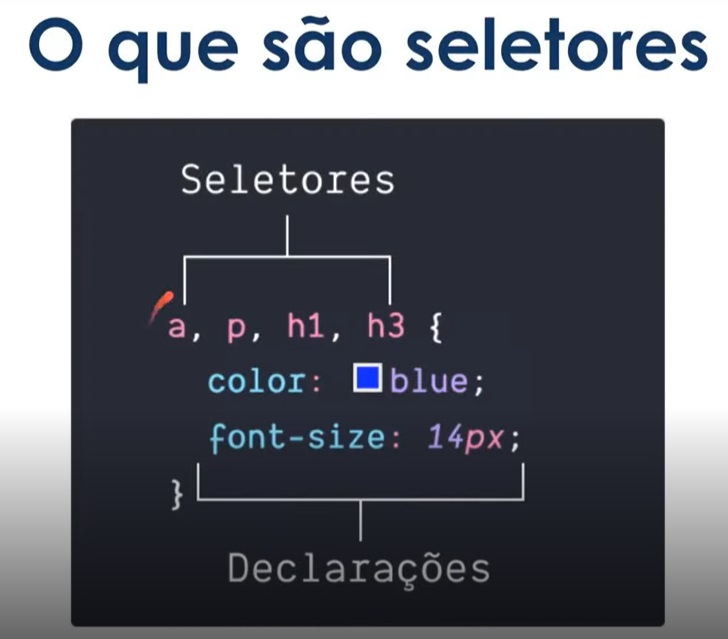
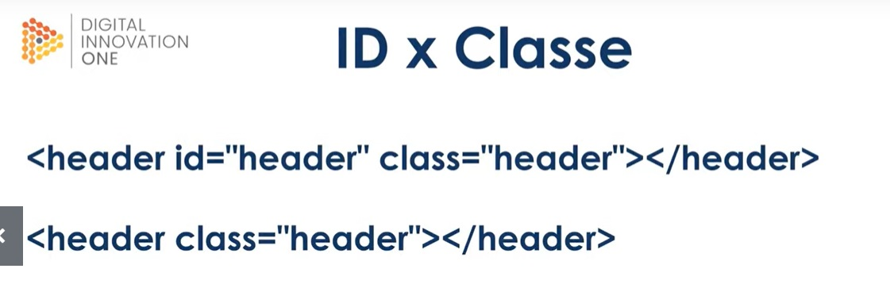
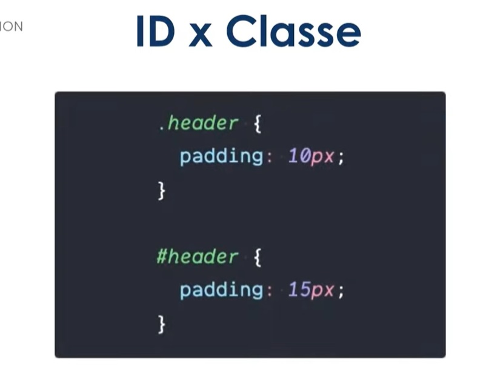
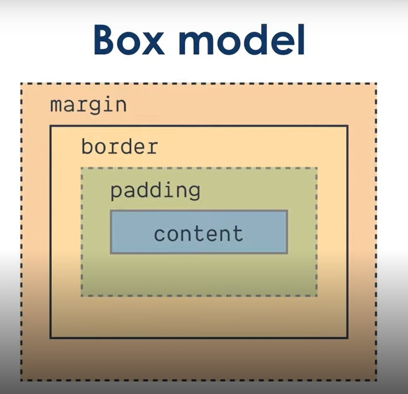

Objetivos
-
O que são seletores
-
Conceitos Basicos
-
Principais seletores CSS
Requisitos básicos
-
Um editor de texto (será usado o Visual Studio Code)
-
Um navegador de internet (estarei usando o Chrome)
-
Ter assistido às aulas de introdução ao HTML%



A Classe é precedido por . enquanto ID é precedido por um #, além que ainda temos a caracteristicas que um ID só pode ser usado uma vez na pagina.

Box Model tem quatro areas, a margem (margin), a borda (border), o preenchimento (padding) e conteudo (content):
-
margin - As margens, são espaçamentos entre elementos
-
border - As bordas, circundam o padding e o content e conseguimos alterar a aparencia delas, como largura e cor.
-
padding - O preenchimento, é o espaçamento entre a borda e o conteudo.
-
content - O conteudo é o que seu bloco representa, seja um texto, uma imagem, ou um video.